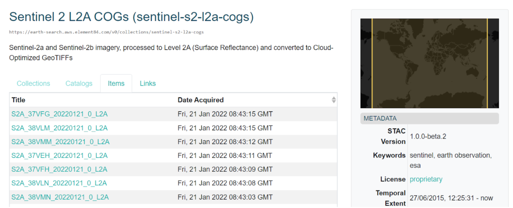

The Pangeo ecosystem
Contributors
 Basile Goussard
Basile Goussard
 Ryan Abernathey
Ryan Abernathey
 Anne Fouilloux
Anne Fouilloux
Questions
What is Pangeo?
What is the Pangeo Software Ecosystem?
What is ARCO (Analysis Ready, Cloud Optimized) Data?
What is Pangeo forge?
What is STAC?
Why and how to use STAC?
How do Pangeo forge and STAC relate to each other?
How can I use and/or contribute to Pangeo?
Where to go to learn more about Pangeo?
Objectives
Understand Pangeo, its community, software ecosystem, infrastructure and cloud optimized data ecosystem.
Understand SpatioTemporal Asset Catalog (STAC) and how it relates to Pangeo.
Understand how to use and contribute to Pangeo.
Learn about Pangeo in Galaxy.
About this presentation
.left[ This presentation is a summary of: ]
- Unlocking the Potential of Cloud Native Science with Pangeo by Ryan Abernathey (Co-founder of Pangeo);
- Introduction to DASK by the Dask Community;
- STAC for Earth Observation by Basile Goussard (netCarbon).
Speaker Notes
This presentation is a summary of three presentations: Unlocking the Potential of Cloud Native Science with Pangeo by Ryan Abernathey, Co-founder of Pangeo; Introduction to DASK by the Dask community and STAC e.g. SpatioTemporal Asset Catalogs, for Earth Observation by Basile Goussard from netCarbon.
Pangeo in a nutshell
A Community platform for Big Data geoscience
- Open Community
- Open Source Software
- Open Source Infrastructure
Funders


Speaker Notes
Pangeo is first and foremost a community promoting open, reproducible, and scalable science. This community provides documentation, develops and maintains Open Source software, and deploys computing infrastructure to make scientific research and programming easier.
Pangeo is funded through many different projects in USA, Europe and Australia but the main funders are NSF, EarthCube, NASA and the Gordon and Betty Moore foundation.
Motivations
.left[ There are several building crises facing the geoscience community: ]
.left[- Big Data: datasets are growing too rapidly and legacy software tools for scientific analysis can’t handle them. This is a major obstacle to scientific progress.] .left[- Technology Gap: a growing gap between the technological sophistication of industry solutions (high) and scientific software (low).] .left[- Reproducibility: a fragmentation of software tools and environments renders most geoscience research effectively unreproducible and prone to failure.]
Speaker Notes
The Pangeo Project has been motivated by several building crises faced by the geoscience community: Big data, Technology gap and Reproducibility crisis. Indeed, datasets are are growing too rapidly and legacy software tools for scientific analysis can’t handle them. This is a major obstacle to scientific progress. Another obstacle concerns the growing gap between the technological sophistication of industry solutions (high) and scientific software (low). Finally, the fragmentation of software tools and environments renders most geoscience research effectively unreproducible and prone to failure.
Goals
Pangeo aims to address these challenges through a unified, collaborative effort.
The mission of Pangeo is to cultivate an ecosystem in which the next generation of open-source analysis tools for ocean, atmosphere and climate science can be developed, distributed, and sustained. These tools must be scalable in order to meet the current and future challenges of big data, and these solutions should leverage the existing expertise outside of the geoscience community.
Speaker Notes Pangeo aims to address these challenges through a unified, collaborative effort.
The mission of Pangeo is to cultivate an ecosystem in which the next generation of open-source analysis tools for ocean, atmosphere and climate science can be developed, distributed, and sustained. These tools must be scalable in order to meet the current and future challenges of big data, and these solutions should leverage the existing expertise outside of the geoscience community.
The Pangeo Software Ecosystem

Source: Pangeo Tutorial - Ocean Sciences 2020 by Ryan Abernathey, February 17, 2020.
Speaker Notes The Pangeo software ecosystem involves open source tools such as X-array, iris, dask, jupyter, and many other packages. There is no single software package called Pangeo; rather, the Pangeo project serves as a coordination point between scientists, software, and computing infrastructure. On this figure, the python packages are “layered” based on their dependencies. At the “bottom” is the Python programming language itself; on the second layer, we can find NumPy or Jupyter Notebooks that are very common Python packages and that you may know already. X-array makes an intensive use of Numpy for its underlying data structures. Iris has what we call a “high-level” user interface with many functions for analysing and visualising Earth Science data.
Xarray
Xarray is an open source project and Python package that makes working with labeled multi-dimensional arrays simple, efficient, and fun!
Speaker Notes
X-array is an open source project and Python package that makes working with labeled multi-dimensional arrays simple, efficient, and fun!
What is Xarray?
.left[Xarray expands on NumPy arrays and pandas. Xarray has two core data structures:]
.left[- DataArray is our implementation of a labeled, N-dimensional array. It is a generalization of a pandas.Series.]
.left[- Dataset is a multi-dimensional, in-memory array database. It is a dict-like container of DataArray objects aligned along any number of shared dimensions, and serves a similar purpose in xarray to the pandas.DataFrame.]
.left[Source: Xarray documentation]
Speaker Notes X-array expands on NumPy arrays and pandas. X-array has two core data structures: DataArray is the X-array implementation of a labeled, N-dimensional array. It is an N-D generalization of a pandas Series. Dataset is a multi-dimensional, in-memory array database. It is a dict-like container of DataArray objects aligned along any number of shared dimensions, and serves a similar purpose in X-array to the pandas DataFrame.
Example
Speaker Notes
On this figure, we have represented an X-array Dataset. Each X-array Dataset contains dimensions: here we have 3 dimensions e.g. latitude, longitude and time. These are also the coordinates of the datasets and then we have variables. In our example, each of the variables have 3 dimensions. The idea behind X-array is to provide functions to facilitate the handling of complex and multi-dimensional datasets we have in Earth Science. However, X-array is a very generic Python package and it is not only used for Earth Sciences. Any data that can be represented on a coordinate reference system is very much suitable for X-array. X-array is widely used and probably the most common package from the Pangeo software ecosystem.
iris
A powerful, format-agnostic, community-driven Python package for analysing and visualising Earth science data.
.pull-left[
- Data model based on the CF conventions;
- Unit conversion;
- visualization interface based on matplotlib and cartopy;
- efficient from single-machine through to multi-core clusters and High Performance Computers. ]
.pull-right[
.image-40[
 ]
]
]
.left[Source: Scitools Iris documentation]
Speaker Notes
Iris is a powerful, format-agnostic, community-driven Python package for analysing and visualising Earth science data. Its data model is based on the NetCDF Climate and Forecast Metadata Conventions. Iris contains a lot of very useful functionalities such as unit conversion. It offers a powerful visualization interface based on matplot lib and cartopy. Finally Iris is efficient everywhere, from a single machine through to multi-core clusters and High Performance Computers.
Dask
.pull-left[
Enabling performance at scale for the tools you love
- Powerful: Leading platform today for analytics
- Scalable: Natively scales to clusters and cloud
- Flexible: Bridges prototyping to production
Dask accelerates the existing Python ecosystem (Numpy, Pandas, Scikit-learn) ]
.pull-right[
.image-40[
 ]
]
]
.left[Source: Dask documentation]
Speaker Notes Dask is a flexible library for parallel computing in Python. It is widely used for getting the necessary performance when handling large and complex Earth Science datasets. Dask is powerful, scalable and flexible. It is the leading platform today for analytics. It scales natively to clusters, cloud and bridges prototyping up to production. The strength of Dask is that is accelerates the existing Python ecosystem e.g. Numpy, Pandas and Scikit-learn with few effort from end-users.
How does Dask accelerate Numpy?
.image-40[
 ]
]
.pull-left[
import numpy as np
x = np.ones((1000, 1000))
x + x.T - x.mean(axis=0)
]
.pull-right[
import dask.array as da
x = da.ones((1000, 1000))
x + x.T - x.mean(axis=0)
]
Speaker Notes
How does dask accelerate Numpy? Well, it is simple as you can see on this example. Instead of importing numpy, you need to import dask array. Then the rest of your code is unchanged. Dask chunks your big datasets into “Numpy” arrays and this is how we can easily parallelize and scale.
How does Dask accelerate Pandas?
.image-25[
 ]
]
.pull-left[
import pandas as pd
df = pd.read_csv("file.csv")
df.groupby("x").y.mean()
]
.pull-right[
import dask.dataframe as dd
df = dd.read_csv("s3://*.csv")
df.groupby("x").y.mean()
]
Speaker Notes
To accelerate Pandas, dask follows the same approach than with X-array. Your Pandas dataframe is “divided” in chunks. Instead of importing pandas, you import dask.dataframe. And again, the rest of your code remains unchanged.
How does Dask accelerate Scikit-Learn?
.image-40[
 ]
]
.pull-left[
from scikit_learn.linear_model import LogisticRegression
lr = LogisticRegression()
lr.fit(data, labels)
]
.pull-right[
from dask_ml.linear_model import LogisticRegression
lr = LogisticRegression()
lr.fit(data, labels)
]
Speaker Notes As you can guess, it is not different for Scikit-Learn. Dask accelerate Scikit-Learn in a similar way. To scale your code, you can use dask_ml rather than scikit_learn.
jupyter
.pull-left[
Free software, open standards, and web services for interactive computing across all programming languages
- Jupyter notebook: a simple, streamlined web application for creating and sharing computational documents;
- JupyterLab: Next generation of Jupyter notebook interface that is flexible and easier to customize and extend;
- JupyterHub: A multi-user version of the notebook ]
.pull-right[
.image-40[
 ]
]
]
]
.left[Source: Jupyter documentation]
Speaker Notes
You may have heard about the Jupyter ecosystem and wonder why it is presented here as part of the Pangeo ecosystem.
Jupyter plays an important role for the Pangeo community.
Jupyter is free, follows open standards, and has web services for interactive computing across all programming languages. The Jupyter notebook is probably still the most popular interface. It is a simple, streamlined web application for creating and sharing computational documents; JupyterLab is the next generation of Jupyter notebook interface that is flexible and easier to customize and extend. Finally JupyterHub is the multi-user version of the notebook (for both Jupyter Notebooks and JupyterLab).
Jupyter and Galaxy
- Galaxy Interactive Tools
- Several JupyterLab computing environments available such as Galaxy Pangeo, Galaxy Climate Notebooks
- All are Galaxy Tools that includes metadata and can be added as a step in your Galaxy Workflows
Speaker Notes Pangeo JupyterLab is available in Galaxy as a Galaxy interactive tool. It corresponds to the Pangeo notebook. Many packages from the Pangeo software stack are also available in the Galaxy Climate Notebook which is another Galaxy Interactive Tool. The main difference is that the latter is used for Earth System Modelling so it contains packages for running popular Earth System Models.
There is a growing number of Galaxy Tools that make use of packages from the Pangeo software stack and that can be easily integrated in Galaxy workflows. Another advantage is that no Python programming skills are required for these Galaxy Tools which is of course not the case for using Pangeo Notebooks. All Pangeo Tools in Galaxy (interactive notebook or asynchronous tools) include metadata and can be added as a step in your Galaxy Workflows.
Analysis Ready, Cloud Optimized Data (ARCO)
- What is “Analysis Ready”?
- Think in “Datasets” not “data files”
- No need for tedious homogenizing / cleaning setup_guides
- Curated and cataloged
- What is “Cloud Optimized”?
- Compatible with object storage e.g. access via HTTP
- Supports lazy access and intelligent subsetting
- Integrates with high-level analysis libraries and distributed frameworks
Speaker Notes
When analyzing data at scale, the data format used is key. For years, the main data format was netCDF e.g. Network Common Data Form but with the use of cloud computing and interest in Open Science, different formats are often more suitable. Formats for analyzing data from the cloud are refered to as “Analysis Ready, Cloud Optimized” data formats or in short ARCO. What do we mean by analysis ready? When you analyse data, you are not interested in the data files themselves but in the datasets you need to use. We think in terms of “datasets” rather than “data files”. This abstraction makes it easier to analyse your data because there is no need for tedious homogenizing, organizing or cleaning your files. All your datasets are curated and cataloged. End-users access datasets through well curated catalogs. The location of the data files and organization may change, it is transparent to end-users.
What is cloud optimized? It is compatible with Object storage e.g. can be accessed via HTTP protocol. It supports lazy access and intelligent subsetting e.g. there is no need to load all your datasets in memory. Only what is needed and when it is needed will be accessed. It integrates with high-level analysis libraries and distributed frameworks.
Example of ARCO Data
Speaker Notes The example we show here is not very different from the X-array we presented earlier. The difference is that instead of having one big dataset, it is chunked appropriately for analysis and has rich metadata.
Pangeo Forge

Pangeo Forge is an open source platform for data Extraction, Transformation, and Loading (ETL). The goal of Pangeo Forge is to make it easy to extract data from traditional repositories and deposit this data in cloud object storage in an analysis-ready, cloud optimized (ARCO) format.
Pangeo Forge is inspired directly by Conda Forge, a community-led collection of recipes for building conda packages.
Speaker Notes Pangeo Forge is an open source platform for data Extraction, Transformation, and Loading e.g. ETL. The goal of Pangeo Forge is to make it easy to extract data from traditional repositories and deposit this data in cloud object storage in analysis-ready, cloud optimized (ARCO) format.
Pangeo Forge is inspired directly by Conda Forge, a community-led collection of recipes for building conda packages.
It is under active development and the Pangeo community hopes it will play a role in democratizing the publication of datasets in ARCO format.
How does Pangeo Forge work?
.image-40[
 ]
]
.image-40[ ]
Speaker Notes This may look complicated on this figure but like for conda forge most of the process is automated.
The goal of Pangeo Forge is to “convert” existing datasets from their native format into ARCO format. They can then be used by anyone from anywhere.
Let’s imagine you have a bunch of data from NOAA in a tradictional data repository. Instead of manually converting them to ARCO format, you create a recipe, actually you often reuse an existing one that will automatically transform the original datasets in ARCO format and publish it to an s3 compatible object storage such as Amazon.
The next step is then to tell the community where and how to access to your transformed dataset. This is done by creating a catalog. —
STAC
.center[STAC stands for SpatioTemporal Asset Catalog.]
Speaker Notes STAC stands for SpatioTemporal Asset Catalog.
Why STAC?
Each provider has its catalog and interface.
.pull-left[
Just searching the relevant data for your project could be a tough work…
- Lot of data providers …
- Each interface is unique …
]
.pull-right[ ]
Speaker Notes
Why do we need spatio temporal asset catalogs? Each provider has its own catalog and interface. So just searching the relevant data for your project could be a tough work. We have lots of data providers and each with a bespoke interface. —
Why STAC?
Each provider has its own Application Programming Interface (API).
.pull-left[
If you are a programmer that’s exactly the same…
You should design a new data connector each time…
- Lot of data providers …
- Each API is unique …
]
.pull-right[ ]
Speaker Notes Each provider has its own Application Programming Interface (API). Every time you want to access a new catalog, you need to change your program. It is becoming quickly difficult for programmers who need to design a new data connector each time.
Why STAC?
Let’s work together.
.pull-left[
The main purpose of STAC is:
- Build a common language to catalog geospatial data
]
.pull-right[ ]
Speaker Notes
Why not trying to work together? This is the main purpose of STAC: build a common language to catalog geospatial data.
Why STAC?
Let’s work together.
.pull-left[
It’s extremely simple, STAC catalogs are composed of three layers :
- Catalogs
- Collections
- Items
- Collections
]
.pull-right[
It’s already used for Sentinel 2 in AWS
.image-90[  ]
It’s already used for Landsat 8 in MICROSOFT
.image-90[ ]
]
Speaker Notes
STAC catalogs are extremely simple. They are composed of three layers: catalogs, collections and items. STAC is already very popular for Earth Observation satellite imagery. For instance it is used for Sentinel 2 in AWS and Landsat 8 in Microsoft. —
How to use STAC
Depending on your needs.
.pull-left[ Storing your data
.image-40[ ] ]
.pull-right[
Searching data
.image-40[ ]
]
Speaker Notes
How to use STAC? Depdending on your needs, you will be using STAC to store your data or to search for existing data.
Searching data
Let’s search data over the main region (France) between the 1st January 2019 and the 4th June 2019.
.image-100[ ]
Speaker Notes
Here we present an example using the sat-search utility. You can use intake-stac and achieve similar results. In this example, we search data over the main region (France) between the 1st January 2019 and the 4th June 2019 using STAC catalogs.
The result shows that data is available for 108 dates and for Landsat-8, sentinel 2A, etc.
Searching and processing
.image-100[ ]
Speaker Notes
With STAC, you can search datasets but you can also easily apply your own processing using STAC API.
STAC ecosystem
A lot of project are now build around STAC.
- All the STAC Catalogs available are at https://stacindex.org/catalogs
- Lots of tutorials can be found at https://stacindex.org/learn
- All packages that rely or work extremely well with STAC are at https://stacindex.org/ecosystem
- Intake-stac is the most popular Python package for discovering, exploring, and loading spatio-temporal datasets.
Speaker Notes
The STAC ecosystem is growing and a lot of projects are now built around STAC. All the STAC Catalog available are online at https://stacindex.org/catalogs. Lots of tutorial can be found at https://stacindex.org/learn. All packages that rely or work extremely well with STAC are at listed at https://stacindex.org/ecosystem.
If you are a Python programmer, you will probably make use of intake-stac: this is currently the most popular Python package for discovering, exploring, and loading spatio-temporal datasets.
A lot of contributors!
Join and contribute to STAC: https://github.com/radiantearth/stac-spec
.image-100[ ]
Speaker Notes
There is already a lot of contributors and it would be hard to name all of them. Since STAC welcomes new contributors, the list will likely grow very quickly! —
STAC and Pangeo Forge
- Pangeo-forge supports the creation of analysis-ready cloud optimized (ARCO) data in cloud object storage from “classical” data repositories;
- STAC is used to create catalog and goes beyond the Pangeo ecosystem;
- Work is ongoing to figure out the best way to expose Pangeo-Forge-generated data assets via STAC catalogs.
Speaker Notes
So how do STAC and Pangeo-forge relate to each other? Pangeo-forge supports the creation of analysis-ready cloud optimized (ARCO) data in cloud object storage from “classical” data repositories; STAC is used to create catalogs and goes beyond the Pangeo ecosystem; Work is ongoing to figure out the best way to expose Pangeo-Forge-generated data assets via STAC catalogs.
Using and/or contributing to Pangeo
.left[The Pangeo project is completely open to involvement from anyone with interest.
There are many ways to get involved:]
- Science users: read the Guide for Scientists, browse the Pangeo Gallery, watch Pangeo Showcase Webinar Series, read about the Packages, or try it yourself on Galaxy!
- Developers / system administrators: learn about the Technical Architecture or read the Deployment Setup Guides.
For more information, consult the Frequently Asked Questions.
Everyone is welcome to the Pangeo Weekly Community Meeting.
Speaker Notes The pangeo project is completely open to involvement from anyone with interest. There are many ways to get involved. Science users can read the Guide for Scientists, browse the Pangeo Gallery watch Pangeo Showcase Webinar Series, read about the Packages, or try it themselves on Galaxy! Developers and system administrators can learn about the Technical Architecture or read the Deployment Setup Guides. For more information, consult the Frequently Asked Questions on the pangeo website.
Everyone is welcome to the Pangeo Weekly Community Meetings: they are organized in different time zones for increasing accessibility.
Learn more
- Web: https://pangeo.io
- Discourse: https://discourse.pangeo.io/
- Github: https://github.com/pangeo-data
- Twitter: @pangeo_data
Speaker Notes If you want to learn more about Pangeo, visit the Pangeo website https://pangeo.io, or github reposity https://github.com/pangeo-data. Get help on discourse at https://discourse.pangeo.io/ and follow Pangeo on Twitter @pangeo_data.
Key Points
- Pangeo is an inclusive community promoting open, reproducible and scalable science.
- The Pangeo software ecosystem involves open source tools such as Xarray, iris, dask, jupyter, and many other packages.
- Pangeo is an inclusive community promoting open, reproducible and scalable science.
- The Pangeo software ecosystem involves open source tools such as Xarray, iris, dask, jupyter, and many other packages.
- On the cloud, Analysis Ready, Cloud Optimized ata format (ARCO) is preferable.
- Pangeo-forge eases the extractionm transformation and loading of Earth Science datasets
- SpatioTemporal Asset Catalogs helps to provide a unified interface for searching and extracting spatio temporal datasets
- STAC and pangeo-forge aim at complementing each other
Thank you!
This material is the result of a collaborative work. Thanks to the Galaxy Training Network and all the contributors! This material is licensed under the Creative Commons Attribution 4.0 International License.
This material is licensed under the Creative Commons Attribution 4.0 International License.